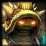
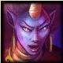

De: La Frikipedia, la enciclopedia extremadamente seria.
De: La Frikipedia, la enciclopedia extremadamente seria. De: La Frikipedia, la enciclopedia extremadamente seria.
«Nos la suda.»
~ Blizzard sobre el League of Legends
«¿LOL?»
~ Garrota sobre el League of Legends.
A partir de un mod. Y a partir de ese mod surge este videojuego. Se trata de la optimización de los recursos informáticos enfocada al modo de juego planteado por Defensa De Los Ancianos y su expansión Defensa De los Ancianos: Todas las estrellas, las cuales yo nunca he jugado ^^. Bienvenido a la Liga de las leyendas
A diferencia del torres apiladas, surgieron (utilizando el editor de mapas del Warcraft III) no menos estúpidas partidas en las que sólo hay que controlar un héroe para darse el buenos días con otros tantos; de las cuales destacan:
La más importante es la DOTA y su "expansión", cuyas popularidades hicieron que uno o dos se planteasen diseñar desde el principio un juego de esas características.
Tal fue el caso del League of Legends. Muy originales y para ganar popularidad, sus creadores condicionaron el nombre del juego al archifamoso acrónimo de internet, LOL, para que éste se asociase con su juego. Así que de ahora en adelante, llamémoslo LDL (Liga De Leyendas).
El objetivo es el mismo de todos estos mods: destruir el castillo enemigo antes de que éste destruya el tuyo. Aunque aquí para intentar romper con lo clásico lo llaman Nexo.
Para cumplir este objetivo, uno debe pwnear a los demás héroes (aquí llamados <<Campeones>>) sin ser pwneado, porque por cada kill se consigue oro, necesario para adquirir objetos imba con los que seguir pwneando y abrirse paso a través de las torres enemigas.

Si quieres iniciarte en el juego, estás en el lugar apropiado para aprender. A continuación se describe mínimamente las cinco estrategias que se dan en las partidas.
La primera lección no podía ser otra que ésta. En cada uno de los caminos que componen el mapa los campeones pueden esconderse en unos hierbajos para intentar pillar desprevenido o emboscar a sus rivales. Esto se resume en que uno no debe ir avanzando sin considerar la posibilidad de que los cinco rivales estén en el límite de los hierbajos (en plan superpuestos, uno encima de otro); pero una cosa es la teoría y otra la práctica: siempre estará el típico motivado que ves en el minimapa acercarse demasiado a la torre, y que muere a los segundos después porque:
Esto consiste en coger y pirarse de un camino a otro con el fin de gankear a lo sucio (normalmente 3 vs 1). Un buen uso de esta estrategia da muchas ventajas al equipo que la practique, aparte de gankear al Heimerdinger de turno, permite hacer un push rápido entre los 2 o más jugadores, y de llegar a destruir la torre en cero coma. Además, propociará un aumento del rage del jugador y equipo contrario, no pudíendose descartar la posibilidad de que abandone la partida. En muy contadas ocasiones un equipo de 4 vence a otro de 5.
Una variante de esta estrategia es la denominada junglear. Se trata de un miss permanente (matando a los bichos del mapa) que obliga a uno de los compañeros a jugar a la defensiva en la torre. Aunque es muy posible que la torre llegue a perder "vida", siempre se contará con la sorpresa a favor, puesto que el jungler puede aparecer en cualquier parte del mapa. No suele haber rage por morir a manos de un jungler, ya que por sentido común, nadie oía los aullidos del lobo hasta que lo tuvo destrozándole la espalda (lamer).
Cuando una partida de cinco contra cinco se prolonga demasiado, el Barón Nashor se convierte en el elemento que desequilibra la balanza.
Resulta que este dragoncito del tres al cuarto da un buff overpowered, y como cabía esperar, llega un momento en que todos quieren hacerse con tal poder. Poder... que se convierte en fuente de pwneo...
¿Y cúando atacar, entonces, al Nashor? No se sabe porque como hemos dicho es fuente de pwneo. Es decir, que entre emboscadas y trampas nadie ha vivido lo suficiente para contarlo (bueno, Karthus sí).
Normalmente al Baron Nashor se le suele atacar cuando el equipo contrario esta en su mayoría todos muertos o en su defecto estan en otra zona del mapa todos haciendo cositas. Por eso es super importante wardear la zona del Nashor sobre todo.
Desesperación, ira... sufrimiento. No queda más remedio que apartarse de las refriegas para intentar ayudar a los súbditos (y no al revés que sería lo normal) a rematar las torres circundantes. Pero hay un problema. El hecho de haber muerto 25 veces y no haber matado ni siquiera 5 hace que no le baje la vida a la torre, dando el tiempo suficiente como para que el 25 se convierta en 26; y de que después aparezca en el general <<noob shaco backdooring>>.
Eso si un feeder se va por la puerta trasera. Si se va una Tristana fed, se generará una desesperación en el equipo contrario digna de compararse a al cc de las arenas del wow llevado a cabo por lock demon y druida semi-chopo (de esos que te lanzan unas cuantas lunas y raíces y después se va corriendo en chopoforma). Sobretodo si el equipo de Tristana lleva 15 asesinatos (10 de ella) y el del giga-tank Mordekaiser 45. Resumiendo:
«We're gonna fucking loose against these n00bs»
~ giga-tank Mordekaiser sobre la puerta trasera
Todas tus torres han sido destruidas. Sólo te queda el Nexo asediado por incontables legiones de supersúbditos. Para colmo, vuestro Tryndamere palma intentando solear a Nashor. Es entonces cuando tus ganas de no perder 13 ELO e intuición te hacen pulsar el tabulador para que veas que su Maokai se ha hecho mago, momento en el que suena la canción esa con la que Gandalf llega acompañado de las águilas gigantes.
No tienen tanque.
Comenzáis a empujar destruyendo las torres y gankeando. Vuestro giga-tanque Mordekaiser sacrifica su vida en una épica refriega en la que por fin acabáis con la 17/0/2 Tristana. Uno, dos, tres inhibidores. ¡1 minuto para destriuir las dos últimas torres y el Nexo!
¿Eh? ¡Espera! ¿Qué es eso? ¿No habían muerto todos en el combate anterior! ¡¡Todos a base!! QUÉ NARICES ESTÁIS **** ALL FUCKING BACK ****** **** ***** ***** NOOOOOOOBSSSSSSSSSSS ****
¿A qué viene esa cara tan larga? DERROTA
Cansado de correr?, todos tus esfuerzos para tirar torres son en vano? Esta es tu estrategia! Date un ultimo placer con el mitico personaje Cho'Gath antes de morir pulsando las teclas ctrl+3 un baile que más que un baile parece un orgasmo.
Y ya de paso aprieta alt+f4 y desinstala esta mierda de juego en la que se compite por ver que equipo tiene más afks.
| Foto de archivo | Nombre | Descripción | Ataques |
|---|---|---|---|
| Aatrox | Puto roto de los cojones que te mira y te mata. Lo que tiene de pasiva no se llama sustain, se llama aatroxtain. Típico personaje junto a Riven que dices: " Bua soy pro y subo a diamante usando esto. Busco equipo mínimo FNATIC " | Volar, destruirte y revivirse cuando lo matas con su puta pasiva. | |
| Ahri | Prueba viviente de que todas las chicas de la liga son lesbianas o bisexuales, además gracias a ella hemos descubierto que a Ganklpank le van los muy machos. Esta ZORRA (no tiene otro nombre) le ha echo una ejem a los ejecutivos de Riot para que la pongan la primera, pero los de Riot se cansaron de las ZORRA y pusieron a Aatrox en primer lugar. | Te manda besitos, bota y juega con bolas chinas. | |
| Akali | Representante en la Liga de la Real Sociedad de Jardineros y Botánicos. Empuña un par de hoces |
Ahora me ves (te pega), ahora no me ves (se camufla), ahora me ves (te pega), ahora no me ves (se camufla), ahora me ve... (muere). | |
| Alistar | El cuarto de la lista. Es un Parla, esté a salvo de recibir un focus. | Stuns y encabronamientos. | |
| Amumu | No se trata de una momia del Antiguo Egipto, sino de un superviviente de Saw. Fue "invitado" por su visión negra de la vida y sus tendencias EMO-suicidas. Ahora desfigurado, cubre su cuerpo con vendas, que no dudará en quitarse para dejar helados a aquellos por quienes llora al ser rechazado como amigo.Es el primer EMO de la historia. | Llorar. | |
| Anivia | La curiosidad mató al gato, pero no al pollo, ya que: | Muy fríos. A Anivia le duele mucho la frente. | |
| Annie | Niña que nació con habilidades de hechizar cosas con fuego, un día hechizó su oso de peluche para que Brand no la siguiera acosando. | Invocar a su oso y quemarte el culo | |
| Ashe | La primera campeona que conocerás en todo el juego, chulea mucho acerca de su buena puntería pero no habla nada de su matrimonio con Tryndamere, cómo se nota que no follan ("verídico"). | ¿Cómo explicas que tire con precisión una flecha que es más grande que ella misma? | |

|
Blitzcrank | Maldito robot de vapor que lleva consigo un látigo masoquista para atraerte y violarte hasta sacarte el recto por la nariz,fue el primer campeón del juego. | Lanzarte su 'látigo' y atraparte en un oscuro 'first blood' |
| Brand | Pirómano unido a la liga para matar a su archienemiga Annie, porque por su culpa ya no puede acercarse a los colegios. | Hola Annie, ¿quieres un caramelo? Oye, qué haces. Deja eso que jugar con fuego es malo. ¿Eh? ¡Detente! ¡¡NO POR FAVOR NO ME QUEMES!! ¡¡¡¡¡AAAARRRRRRRRRRGGGGGGGHHHHHHHHHHHH!!!!! | |
| Caitlyn | Una policía steampunk unida a la liga para mantener el orden y (de paso) fusilarte con su ulti y poner trampas de oso para algún día atrapar a gragas, es la campeona con mas rango en todo el juego, despues dicen que es fácil de usar. | Así que te quieres escapar? 'R' y Headshot. | |
| Cassiopeia | Resultado de una orgía entre tu vieja, un rey cobra y hercules, es counter de casi todos los mids y todos le dicen arenosa porque cuando se mueve se lleva toda la arena con su concha. | petrificarte el culo y tormentas de arenas por todos lados. | |
| Cho'gath | Por mucho que le pese, este campeón no es un ser abisal, sino un langostino caido de la pescadería a la misma alcantarilla de la que bebió Twitch. | El Vacío, argumenta siempre Cho, es muy peligroso y caótico. Por eso lo silencia. Por eso lo stunea. Y menos mal que no se lo puede comer. | |
| Corki | A este gordo mexicano le agradaban los aviones y por eso se hizo un cosplay de Amelia Earhart y sus padres lo dejaron en la calle, vivió traumatizado hasta que gragas le transmitió 'su esencia'. | Volar y Destruir | |
| Papi Darius | New noob champ por excelencia y el chuloputas de Noxus,terriblemente fácil de usar y de utilidad 0, sin skills de daño y mas lento que la mayoría de off-tanks.
¿Donde queda lo de noob champ? 1000 real damage whit ulti.Noob ulti Nº 4 |
Entrar en la Team Fight y esperar, cuando alguien este con poca vida... R ¿y luego? R ¿y después? R , pero,¿ y las otras 3 skills? R pero yo quiero divertirme un poco y... y darle a los botones y... ¡¡¡TU CALLA MANCO Y DALE A R!!!
PENTAKLL. | |
| Ezreal | No estoy seguro si es un chico o una chica. Lo que si que se bien es que se lleva bien con taric. | Tiene una habilidad igual que el flash y una ulti que puede ir por TOOOODO el mapa, permitiendo hacer KS desde donde te salga de los HUEVOS. | |
| Fiddlesticks | Resultado de una fumada inglesa el día de Halloween, Fiddlesticks puede tomar dos personalidades distintas:
|
Seguro que están en Nashor. Les voy a hacer el ulti y fijo que se lo comen. Moriré pero me haré triple asesinato, y también les robaré el buff.
Resulta que el equipo contrario estaba, de hecho, preparándose para atacar a Nashor, todavía sin pulearle. Por tanto Fiddlestick puleó al bicho con su AOE, los otros, fuera del alcance del círuclo, se rieron y, a continuación, gankearon al espantapajaros. Es la transición Fiddlesticks-Feedersticks. | |
| Garen | «¡¡Demenciaaaaaaaaaaaal!!» ~ El capitán de la guardia sobre su equipo de mankers
|
El tanque matatanques. A Garen de pequeño le comieron el coco y ahora no conoce otra cosa más que Demacia. Useless como DPS pero como tanque se limitará a robar kills con su Justicia Demencial. Noob ulti nº1.Se dice que es Nazi. | |
| Heimerdinger | Uno de los ciudadanos más afectados por la epidemia de raquitismo de Piltover. Menos en la cabeza. | A menos que seas un minion, no debes preocuparte de sus ataques. | |
| Irelia | Asesina con un corsé más ceñido que la faja de Falete, consta de cuatro cuchillas Gilette Fusion que flotan debido a la antimateria. Puede cambiar la posición de las cuchillas para masacrarte, atravesarte, ensartarte o rebanarte. | Si pone las hojas en cruz, daña mas. Si las pone apuntando hacia un enemigo, se lanza hacia él. Si ves que se ponen rojas, corre, porque también las puede lanzar para dañar y curarse. | |

|
Janna | Señorita de compañía archiconocida como la Scarlett Johansson de la Liga. Tiene un amigo llamado pajarito que le cuenta todos los cotilleos. Parecía una mezcla de ninfa y demonio hasta que la metieron un rework gráfico y ahora parece una |
«Sí, es cierto, te dejo sin aliento por sólo 2.95... el minuto...» ~ La furia de la tormenta haciendo SPAM en mitad de una teamfight.
|

|
Jax | Terriblemente fácil de usar, es buscado por TODOS los ejecutivos de Riot porque le quita el protagonismo a todos los heroes con su super danza. Usa de arma un batón lampara porque no tenia dinero y Caytlin le sacó su lanzacohetes porque... es Caytlin. | "Imaginate si tuviera un arma de verdad" -Jax. Muy malote... ¿No? |
| Karma | Coño, una negra. Meh, igualmente ni pincha ni corta. | Te baila flamenquito con sus abanicos y te canta el "antes muerta que sensilla" | |
| Karthus | Personaje más chulo que un ocho, es tan chulo tan chulo tan chulo que ni siquiera muere cuando le toca. | Te lanza bombas cada segundo, por que él lo vale.
Te baja todos los estados, porque él lo vale. Te pownea cuando te acercas a él, porque él lo vale. Masacra a todo el equipo contrario, se encuentre donde se encuentre, porque él lo vale. Noob ulti nº2. Cuando su vida llega a cero sigue pululando por ahí y matando, porque él lo vale. | |
| El camionero Manolo | Como buen tío que es, Manolo un día se miró el pene y dijo <<26 centimetros.... me hago mujer>>. Y se operó todo menos el pene, por lo cual sigue manteniendo su voz masculina. | Se te monta encima y da vueltas. | |
| Kayle | La única que puede hacer a Darius llorar con su ulti. La primera de las dos hermanas celestiales. | Te pega de rango siendo melee, te ralentiza, corre más y encima se ríe de ti con su ulti. Riot pls | |
| Kennen | El primero de la triada electrica, conocida por su enorme hiperactividad y su gran operío, de pequeño, o sea ayer, metió los dedos en un enchufe y quedo para siempre sumergido en un mar de electricidad estática, una pura rata del laboratorio de singed. | Me meto en medio y hago ulti. | |

|
Leburst | No es campeona, no está OP, no es guarra y puta, no tiene poderes de desdoblación y no miente nunca. | Si un momento espera que me fij... *muerto*. |
| Lee sin | Este tío tiene to lo malo, es ciego, es calvo, y dentro de muy poco, manco.
Si se supone que es ciego, y escucha o siente la presencia del enemigo.... ¿De que cojones están hechos los hierbajos? |
Juega con el continuo espacio tiempo, levitando a 900 de velocidad cuando su media es de 390 y mandando a la parla a un enemigo 3 veces más grande que el de tan solo una patada. | |
| Lulu | La hermana pequeña de Peter Pan, Lulu Pan. | Te transforma en ardilla, gatico, consoladores, bolas chinas... en lo que ella quiera. Es ella quien manipula a Chogath. | |
| Lux | Del noxiano: Sujeto Experimental Fotónico. Cuando era niña fue sometida a duras pruebas de laboratorio, hecho que le traumatizó de por vida. Ahora sufre trastornos obsesivos compulsivos y diversas esquizofrenias. De pronto se pone a llorar mientras mata a un enemigo como de pronto se descojona vigorosamente y aplaude a la nada porque cree ver fantasmas que la hacen reír. En definitiva, es muy temperamental, fruto de las torturas recibidas. | ¡ESTOY LOCA! Había una vez (te stunea) un barquito chiquitito (te lanza la mierda esa ralentizadora), había una vez un barquito chiquitito (la mierda ralentizadora estalla, momento en que empieza a llorar) que no podía que no podía que no podía ¡¡DEMENCIA!! (te mata con el Shoop da Whoop, ya llorando a quintales) navegar. AJAJAJAJAJAJAJA ¡¡Bravo, bravo!! | |
| Malzahar | Humano androgino de voz asexual, ente sus aficciones se encuentran adorar a un ente inexistente y ser gankeado. | Cuidado, o te vomita encima y te pone perdido. | |
| Miss Fortune | Su nombre real es Sara Fortune, pero seguro que te da igual ya que ahora mismo estás mirandole las tetas. | Esta tía juega con las leyes de la lógica, para empezar su pasiva le permite correr más aun llevando tacones, su disparo atraviesa al pobre al que le de, pero el que está detras se jode más que el. Disparando cuatro veces al aire hace que lluevan balas porque a rito no le importa la logica .
FUCK LOGIC. | |
| Mordekaiser | Fanatico del metal, se mete más "metal" (o así llama a su droga) que los del Left 4 Dead. | No Amumu no, Caitlyn no está fedeando, no es necesario reportarla. | |
| Morgana | La segunda de las dos hermanas celestiales, al nacer Morgana cayó directamente al Abismo, aunque sorprendentemente Como fue alimentada con cabezas de pescado arrojadas desde arriba, Morgana quiere matar a todos, especialmente a su hermana, la cual ni siquiera le mandó una mísera postal. |
¡¡Morirás conmigo!! | |
| Pantheon | No es un espartano como muchos piensan, sino un tío que después de ver la película de 300 se hizo un cosplay de Leónidas. Quiere parecerse tanto a sus héroes que en ocasiones hará un Pantheoff: la caída de su ultimate lo mata directamente. | Saltar y romperse la tibia. | |
| Poppy | Camionera con mala hostia que en su tiempo libre se une a la Liga. |
| |
|  | Rammus | Este es el hermano secreto de sonic, pero no lo sacaron en la serie por SOSO..... SOSOOOOOOOOOOOOOOOOOOO, disfruta ir rodando por el mapa mientras la ashe de su equipo muere por gankeo. | Tambien te insulta, como Shen, pero este da en donde más te duele, en tu madre. |
| Ryze | El segundo de la triada electrica, conocida por su enorme hiperactividad y su gran operío, este ni de pequeño, este mete los dedos en un enchufe todos los días, pero es lo bastante listo para almacenar toda esa electricidad en algo que no es el. | Solo... no te acerques. | |
| Shaco | Payaso de cuarentaytantos que una vez expulsado del circo (regalaba sus preciosas cajitas sorpresa a niños de 12 años) se suma a los demás indeseables para acuchillar a otros indeseables. Ha recibido unos buffs que lo hacen indestructible así como quitarte media vida sin poder hacer nada. | Lo necesario para que te consideren Trollface. | |
| Shen | Misterioso ninja y grandisimo hijo de puta, tiene el record de la liga de insultar más rapido que nadie, su tope es 5 insultos en 0.3 segundos. | Ninguno, siempre está baneado. | |
| Sona | Fan nº 1 del gran Twitch, es tan fan que se obsesiona por comprar oráculos para poder verlo aun cuando nadie lo ha invocado porque cambiaron a PantheOFF (cuando lleva revivir y tensión como hechizos de invocador y se buildea como un AD carry, con sanguinaria y bailarines) en el último segundo, bebió de la misma alcantarilla y se quedó muda la pobre, consecuencias fatales ya que ahora no te puede decir <<EH, mi cara está aquí arriba>>. | Te monta un concierto ahí mismo, en medio de tol combate. | |
|  | Soraka | Prima-hermana del hijo de la luna, esta tía no hace más que guiar a sus compañeros y responder llamadas. ES HEALER, NO DPS, que muchos la equipan con filo infinito y sanguinaria. Su destino es morir al menos 10 veces por partida. | Darte maná cuando tiene que curarte y silenciar al DPS cuando tiene que darte maná. Eso si no se encabezona en mejorarse sólo la Lluvia de Estrellas para farmear y loonear. |
| Swain | Almirante destinado a combatir las legiones del Caos procedentes del norte, veterano de guerra que perdió su pierna porque no tenía otra cosa que comer fue finalmente poseído por un Señor de la Transformación de Tzeencht, el cual sólo en determinadas ocasiones mostrará su verdadero ser. | No es lupus. | |
| Taric | Escribiría versos sobre lo gay que es, pero los yaoistas ya lo han incluido en su copyright. | Te tira cremas y maquillaje.
Si Ezreal va a línea con otro support se pone celoso y echa ulti. Las gemas son escandalosas, realmente escandalosas. | |
| Teemo | Es una |
Te va tirando menos te lo esperas sale con más ansias de tirarte | |
| Tryndamere | Bárbaro hablante de Hxsøčolkφσ y de AAAAAAAAAAAAAAA que con complejo de diablo de Tazmania se dedica a recorrer el mapa haciendo el torbellino con su espada. De tres de sus golpes cinco son críticos. Cuanto más pequeño sea el mapa mejor para él, ya que puede llegar rapidamente a todos los sitios tirando del torbellino. |
| |
| Twisted Fate | Éste viene a ser como un Rappel frustrado que al ver el poco éxito de sus estafas de tarot en los canales regionales, decidió usar sus cartas con fines más violentos, argumentando que por lo menos ya no timaría a la gente. Normalmente es un asesino nato, aunque cuando su compañera sentimental, Evelynn, tiene la regla, se convierte en Twisted Fail: queriendo rematar a uno, se teletransporta a su lado sólo para recibir un nuke por parte de los otros cuatro, para después abandonar la refriega lleno de ira e impotencia. | Se las da de crupier repartiendo cartas, pero no tiene ni idea, ya que cuando quiere ralentizar lanza la carta de maná y cuando quiere maná lanza la del stun. Es Twisted Fail. | |
| Warwick | En la izquierda de la Grieta del Invocador antes no había tres lobitos. Había cuatro. Un día Gragas se fue ebrio a junglear y como tenía hambre, mordió a uno de esos lobos convirtiéndolo en Warwick. | Mordiscos a lobos. Mordiscos a golems. Mordiscos a espectros. Mordiscos a golems de mana. Lanzar su ulti a el campeón más débil del equipo enemigo. Morir por meterse en medio del equipo enemigo. Mordisco a Barón. Morir por idiota | |
| Quasimodo | Despues de que hasta una gitana le rechaze decidió dedicarse a las oscuras artes de la necromancia, (total ya habla con estatuas de piedra) pa matar a todo ser viviente. | Invoca replica de las chicas con las que se ha acostado, por eso son fantasmas, por que nunca existieron. Si por casualidad te ves invocado por Quasi echa a correr, tiene fines perversos contigo. | |
| Xin Zhao | En realidad es la putita de Jarvan IV y es una chica, lo que pasa es que es un poco masculina y como los chinos son todos iguales pues no se nota. | ||
| Xerath | El ultimo de la triada electrica, conocida por su enorme hiperactividad y su gran operío (menos este, este no está OP.... pobrecito). Este no mete los dedos en un enchufe, este directamente tiene enchufe en los dedos. Todo apunta a que en su epoca de gloria era un maromo de gimnasio, solo mirale como se mueve. | ¿Desde donde cojones te está atacando? | |
| Zigg | Discipulo del maestro bomberman-sama, entre sus afficiones se encuentran comerse sus bombas, guardar bombas con mecha encendidas en lugares insospechados y reirse maniaticamente sin que su invocador tenga que presionar las místicas teclas SHIFT + 4. | Te lanza bombas que te hacen saltar, hacen saltar a tus enemigos, hacen saltar a los subditos, hacen saltar los lobos, hacen saltar a barón, eso sí, los aliados son inmunes a tales particulas explosivas. |
Debido a las incesantes partidas que los usuarios juegan y juegan, y como no quieren realizar otra actividad que no sea jugar a LD se crearon estos “divertidisimos” minijuegos que tienen lugar en las partidas personalizadas, para que cualquiera se cargue las reglas y los demás tengan que joderse y terminar la partida lo antes posible.
Dichos minijuegos son los siguientes:
El más conocido la característica “superdivertidisima” de este juego es hacer una partida en la que el único factor a tener en cuenta es la suerte en los campeones que le toque a tu equipo. Las reglas son simples:
Existe una variante a este modo que se llama All Mid Draft Mode en la cual los campeones se seleccionan en modo reclutamiento y la suerte ya no participa tanto.
Lo mismo que arriba solo que no hay torretas así que los offtanks están más solicitados. Este modo tiene las mismas reglas que el anterior y la regla de no usar guarnición.
Juego inútil donde lo veas. Un equipo (o dos) recluta un Teemo en su bando, y el otro tiene que matarlo únicamente andando por la jungla. Teemo no puede volver y tiene autorizada la compra de botas. No puedes pasarte por la linea de medio (por donde se dan mamporros los subditos) pero puedes cruzarla por tu lado del mapa, eso significa que cuando tienes a Teemo acorralado (por cierto no puede usar su pasiva) simplemente cruzara la linea por su lado a la otra jungla, y si lo acorraláis tres por un lado y dos por el otro seréis cinco contra dos.
Juego nuevo de carreras alrededor de la cicatriz de cristal. Las reglas son:
Por mucho que intenten te acabaran matando entre tanto stun y te joderán la carrera, ya que no se para mientras tu estás muerto.
¿Qué se puede esperar uno si todo un continente está metido en un mismo saco? Pues frases como
Aunque en realidad estas frases suelen venir un poco más tarde, ya que las primeras suelen ser:
No se trata de un juego para hacer amigos precisamente. Los mayores llegan de trabajar sus 8 horas y los niñatos del colegio con la única intención de echarse un LDL para gankear, y al ser gankeados, estallan de esta forma. El siguiente paso a esto, es ya blasfemar en el idioma propio, y es lo que les suele suceder a los alemanes, enseguida tirando del ich.
Una cosa que sí que es cierta es que si eres tía y mankeas, antes de llevarte la reprimenda, diles eso, que eres tía. Entonces tendrás a los rage de tu parte. Si no quieres ser tan explícita, puedes tirar de adjetivos en frases como <<Lo siento, estoy cansada>>. De cualquier manera, tendrás a los alemanes de tu parte y tu lista de amigos será infinita.
En definitiva, que realmente hay muchos que tienen un problema con este juego.
Ya que no puedo hacerlo ingame porque me borran la cuenta, lo haré aquí.
[...]
Invocadores desaparecen misteriosamente
El tiempo se vuelve en contra de Demacia. Noxus gana terreno en cada contienda y para colmo los propios invocadores corren peligro. En lo que llevamos de mes han desaparecido cuatro influyentes invocadores demacianos, lo cual ha puesto en alerta a la Guardia, capitaneada por el Campeón de la Liga Garen:
«Estamos a verlas venir. No tenemos ni puta idea de lo que está ocurriendo, aunque todo apunta a que no han desaparecido por voluntad propia.»
~ Garen en su declaración oficial
Con el fin de que la ciudadanía pública participe en la búsqueda de los desaparecidos la Liga está repartiendo papeletas y carteles con sus datos y características, y está planteando la posibilidad de formar dos equipos para llevar la búsqueda fuera de las fronteras. Tales equipos estarían compuestos por los siguientes campeones:
Equipo 1
Equipo 2
Por su parte, Noxus asegura que no tiene que ver con el asunto, e intenta mantenerse al margen en la mayor medida posible.
Como jornalistas, es nuestro deber informar a todos los invocadores de los nombres de sus compañeros desaparecidos:
Aprovechamos para recordar que se aumente las medidas de seguridad y que se priorice los usos de fantasmal y destello.
[...]
[...]
Encontrado el culpable del crimen
El equipo de búsqueda ha encontrado los cuerpos sin vida de los invocadores desaparecidos en una cabaña abandonada del sur de Freljord. Las autopsias han demostrado que todos murieron desangrados como consecuencia de varios desgarros sufridos por todo el cuerpo. En cuanto los forenses confirmaron esta causa, la Liga dotó de elixir del oráculo a Blitzcrank y le encomendaron la misión de arrestar a Evelynn, principal sospechosa del crimen.
Cuatro días es lo que le costó al gólem dar con Evelynn. La hacedora de viudas no mostró resistencia y de hecho si no hubiesen ido a arrestarla se habría entregado ella misma.
Nos tomamos la libertad de adjuntar el testimonio que ella misma dio a la jueza Kayle:

|
Llevo meses quejándome a la Liga que sólo me asignan invocadores sin destreza. Mis habilidades se basan en el sigilo, el ataque por la espalda, o lo que es lo mismo, el asesinato. No soy tanque y hace tiempo que las capas solares dejaron de ser efectivas. ¿Es normal que un invocador me haga comprar a estas alturas cinco capas solares? ¿Es normal que en todos los combates a los que soy invocada tenga que morir no menos de quince veces por culpa de invocadores inexpertos? No, como tampoco lo es el hecho de que mis quejas y protestas a la Liga nunca sean atendidas. Así que no me quedaba otra que tomarme esa Justicia de la que tanto alardeáis por mi cuenta. Para deleitarme con su sangre me bastó con decirles que quería una cita con ellos. | 
|
| Testimomio de Evelynn |
Lo que ocurrió a continuación se resume en que Evelynn burló de un destello el cataclismo de Jarvan IV (lo cual pone de manifiesto que al menos un invocador está aliado con ella) y se lanzó para matar al portador del oráculo Blitzcrank (Kayle lanzó invulnerabilidad sobre sí misma), tiró de R y desapareció.
Riot no se da cuenta de que a la mínima de que el DOTA 2 cree sistemas de puntuación individuales y no por equipos, los jugadores atrapados en un Valve es mucho Valve.
Bueno invocadores, esto es todo por hoy. Suscribiros y os espero la semana que viene en la Exposición del Invocador.
Autor(es):